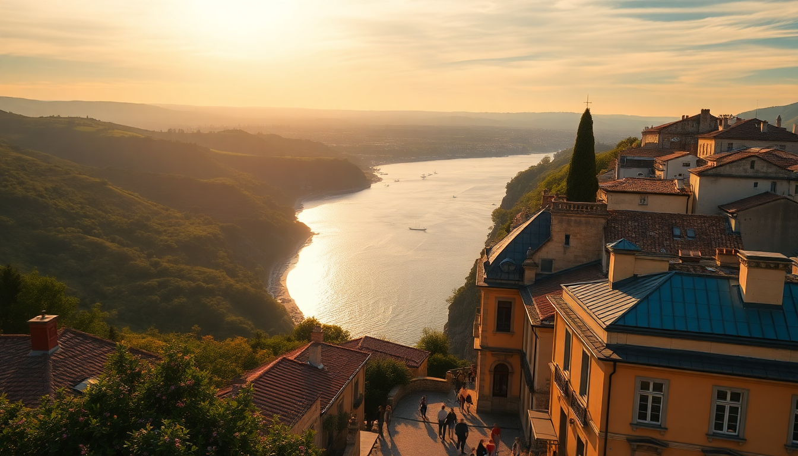

7 Days in France: Paris, Provence & the French Riviera

I spent seven days hopping from Paris down to Provence and ending on the French Riviera. It sounds ambitious, and it is—but with the right train schedule and a few honest choices, it works. Here’s exactly how I did it, what I’d skip, and what I’d do again in a heartbeat.
How do you get from Paris to Provence without wasting a day?
Take the TGV from Paris Gare de Lyon to Avignon TGV. It’s about 2 hours 40 minutes, and you can book through SNCF Connect or Trainline. I booked a 7:30 AM departure, arrived by 10:15, and had the whole afternoon ahead of me. The high-speed train is comfortable, has wifi that actually works, and drops you just outside Avignon’s city walls. From the station, a shuttle bus (navette) runs every 10 minutes into the center.
- Train option: TGV from Paris Gare de Lyon to Avignon TGV
- Time: ~2h40m, book ahead for lower fares
- Local tip: Avoid the 6:30 AM train unless you’re a morning person—cafe service doesn’t start until after Paris
What should you actually do in Avignon?
Avignon is small. You can see the main sites in one day, but don’t rush. The Palais des Papes is massive and worth the audio guide—it’s one of the largest Gothic palaces in Europe. The real win, though, is walking the city walls and finding a quiet spot for lunch. I ate at L’Épicerie, a tiny spot near Place des Corps Saints, and had a goat cheese salad that made me forget I was still recovering from jet lag.
- Palais des Papes — book online to skip the line
- Pont Saint-Bénézet — the famous broken bridge, fine for a photo
- Les Halles d’Avignon — indoor market, great for lunch ingredients or a quick oyster bar stop
- Rue des Teinturiers — quieter street with old water wheels, fewer crowds
Is it worth renting a car for Provence, or should you stick to trains?
If you only have two days in Provence, don’t rent a car. The train from Avignon to Arles takes 20 minutes, and from Arles you can walk everywhere. I did a day trip to Arles to see the Roman amphitheater and Van Gogh’s old haunts. It’s flat, walkable, and the café where he painted Café Terrace at Night is still there (now called Café Van Gogh, a bit touristy but fine for a coffee). If you want lavender fields, you need a car—but that’s a June/July thing, and it’s a 45-minute drive to the Plateau de Valensole.
- Train from Avignon to Arles: 20 min, €10-15
- Arles highlights: Arènes (Roman amphitheater), Fondation Vincent van Gogh
- Skip: The “lavender tour” buses from Avignon in August—fields are already harvested
What’s the best way to get from Provence to Nice?
Take the TGV from Avignon TGV to Nice Ville. It runs direct in about 2 hours 40 minutes. You’ll hug the coast after Cannes, and the views are genuinely good. I sat on the right side of the train for the sea views. Once you arrive at Nice Ville station, you’re a 10-minute walk from the beach. No need for a taxi.
- Direct TGV: Avignon TGV to Nice Ville, ~2h40m
- Alternative: TER regional train if you want to stop in Marseille or Toulon—adds 90 minutes
- Nice station tip: The station has luggage lockers if you arrive early and can’t check in yet
Which neighborhoods in Nice are worth your time?
Skip the Promenade des Anglais during midday—it’s packed and the beach is pebbles, not sand. Instead, stay in Vieux Nice (Old Town) near Cours Saleya. I booked a small apartment on Rue Pairolière, and it was perfect for walking to everything. The market at Cours Saleya runs every morning except Monday (that’s antique day). Grab a socca from Chez Pipo—it’s a chickpea pancake, cheap, and the best street food in the city.
- Vieux Nice — narrow streets, great restaurants, close to beach
- Cours Saleya market — mornings, flowers and produce
- Colline du Château — free park with panoramic views, climb the stairs or take the elevator
- Chez Pipo — 13 Rue Bavastro, socca and pissaladière
What day trips from Nice actually deliver?
I did two: Antibes and Èze. Antibes is a 15-minute train ride. Walk the old town, then the Picasso Museum (housed in a castle, small but excellent). The covered market there, Marché Provençal, is less crowded than Nice’s. Èze is a perched village with insane views. Take bus 82 from Nice’s Vauban station—it’s cheaper than the train and drops you at the entrance. The Jardin Exotique is worth the €7 entry just for the view of the coast.
- Antibes: Train from Nice, €5, 15 min
- Èze: Bus 82 from Vauban, €1.50, 30 min
- Skip Cannes unless you want the film festival—it’s just hotels and chain stores
When is the best time for this route?
May and September are the sweet spots. June works too, but it’s getting hot in Avignon. July and August are brutal in Provence (35°C+ in the shade) and crowded on the Riviera. I went in mid-September. The lavender was gone, but the light in Provence was golden, the sea in Nice was still warm, and lines at the Palais des Papes were short. If you want lavender, aim for late June.
- Best months: May, June, September
- Avoid: August in Nice (locals leave for a reason)
- Packing tip: Light jacket for evenings in Avignon, even in summer
FAQ
Is this itinerary too rushed for seven days? Yes, if you try to add Marseille or Aix-en-Provence. Stick to Paris (2 days), Avignon/Arles (2 days), and Nice (3 days with day trips). You’ll move every 2-3 days, which is doable if you pack light and book trains in advance.
Should I book the TGV ahead of time? Absolutely. Prices double or triple if you buy the day of. I booked two weeks out and paid €39 Paris to Avignon and €44 Avignon to Nice. Same-day tickets can hit €120.
Can I do this trip without speaking French? Yes, but learn “bonjour” and “merci.” In Nice, most restaurant staff speak English. In Avignon, less so. In Arles, almost none. Google Translate works fine, but a smile and a basic greeting go a long way.
Conclusion
- Paris to Avignon by TGV — book early, arrive by late morning
- Avignon is a one-day city — Palais des Papes and a walk through les Halles
- Arles is a better day trip than Marseille — Roman ruins and Van Gogh without the chaos
- Nice’s Vieux Nice is where you want to stay, not the Promenade
- Day trips from Nice — Antibes for the market, Èze for the views, skip Cannes